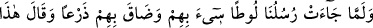
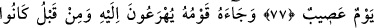
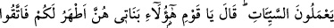
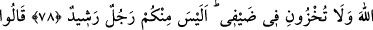
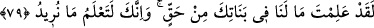
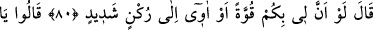
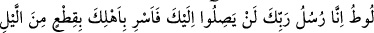
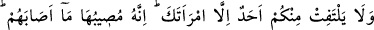
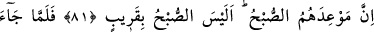
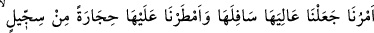
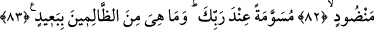
LÛT (A.S.) VE KAVMİ
77. “Elçilerimiz Lût’a gelince onlar yüzünden kaygılandı, onlardan dolayı içi
daraldı da “Bu çetin bir gündür” dedi.”
78. Lût’un kavmi, koşarak onun yanına geldiler. Daha önce de kötü işler
yapmaktaydılar. (Lût:) “Ey kavmim! İşte kızlarım, sizin için onlar daha temizdir.
Allah’tan korkun ve misafirlerimin önünde beni rezil etmeyin! İçinizde aklı başında
bir adam yok mu?!” dedi.
79. Dediler ki: “Senin kızlarında bizim bir hakkımız olmadığını biliyorsun. Ve sen
bizim ne istediğimizi elbette bilirsin.”
80. “Keşke size karşı bir gücüm olsaydı veya güçlü bir kaleye sığınabilseydim!”
dedi.
81. (Melekler) dediler ki: “Ey Lût, biz Rabb’inin elçileriyiz. Onlar sana asla
dokunamazlar. Sen gecenin bir kısmında âilenle (yola çıkıp) yürü. Karından başka
sizden hiçbiri geride kalmasın. Çünkü onlara gelecek olan (azap) şüphesiz ona da
isâbet edecektir. Onlara vâdedilen (helâkin) zamanı sabah vaktidir. Zaten sabah da
yakın değil mi?”
82. Emrimiz gelince, oranın üstünü altına getirdik ve üzerlerine (balçıktan)
pişirilip istif edilmiş taşlar yağdırdık.
83. (O taşlar:) Rabb’in katında işaretlenerek (yağdırılmıştır). Onlar zalimlerden